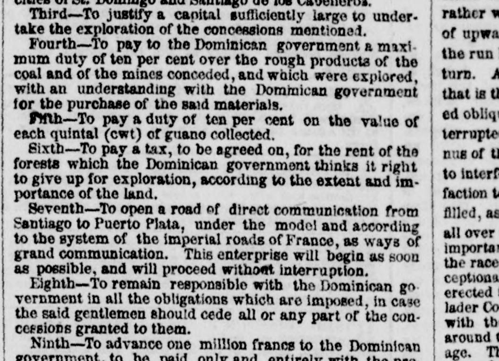
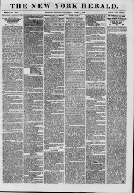

Seventh?To open a road of direct communication from Santiago to PuertoSéptimo: Abrir un camino de comunicación directa desde Santiago hasta Puerto
The New York Herald. New York [N.Y.], June 1, 1859. Page 1. View the originalVer el original


See the full pageVer la página completaThe New York Herald reported on terms of a Dominican government concession requiring explorers to pay a ten percent duty on guano, a negotiated forest rent tax, and to construct a direct road from Santiago to Puerto Plata modeled after French imperial roads. Additionally, the concessionaires were required to advance one million francs to the Dominican government within four months, payable in Paris, and to begin operations within three years or the concessions would become void.El New York Herald informó sobre los términos de una concesión del gobierno dominicano que exigía a los exploradores pagar un impuesto del diez por ciento sobre el guano, una tasa negociada por arrendamiento forestal y construir un camino directo de Santiago a Puerto Plata a imagen de las carreteras imperiales francesas. Además, se exigía a los concesionarios adelantar un millón de francos al gobierno dominicano en un plazo de cuatro meses, pagaderos en París, y comenzar las operaciones en un plazo de tres años, bajo pena de anulación de las concesiones.
FULL TEXT:TEXTO COMPLETO:
Third—To justify a capital sufficiently large to under-take the exploration of the concessions mentioned.Tercero —Justificar un capital suficientemente grande para emprender la exploración de las concesiones mencionadas.
Fourth—To pay to the Dominican government a maximum duty of ten per cent over the rough products of the coal and of the mines conceded, and which were explored, with an understanding with the Dominican government for the purchase of the said materials.Cuarto —Pagar al gobierno dominicano un derecho máximo de diez por ciento sobre los productos brutos del carbón y de las minas concedidas, y que fueron exploradas, con un entendimiento con el gobierno dominicano para la compra de dichos materiales.
Fifth—To pay a duty of ten per cent on the value of each quintal (cwt) of guano collected.Quinto —Pagar un derecho de diez por ciento sobre el valor de cada quintal (cwt) de guano recogido.
Sixth—To pay a tax, to be agreed on, for the rent of the forests which the Dominican government thinks it right to give up for exploration, according to the extent and importance of the land.Sexto —Pagar un impuesto, a ser acordado, por la renta de los bosques que el gobierno dominicano estime correcto entregar para exploración, según la extensión e importancia de la tierra.
Seventh—To open a road of direct communication from Santiago to Puerto Plata, under the model and according to the system of the imperial roads of France, as ways of grand communication. This enterprise will begin as soon as possible, and will proceed without interruption.Séptimo —Abrir un camino de comunicación directa de Santiago a Puerto Plata, bajo el modelo y según el sistema de los caminos imperiales de Francia, como vías de gran comunicación. Esta empresa comenzará tan pronto como sea posible, y procederá sin interrupción.
Eighth—To remain responsible with the Dominican government in all the obligations which are imposed, in case the said gentlemen should cede all or any part of the concessions granted to them.Octavo —Permanecer responsable con el gobierno dominicano en todas las obligaciones que son impuestas, en caso de que dichos caballeros cedan toda o cualquier parte de las concesiones otorgadas a ellos.
Ninth—To advance one million francs to the Dominican government, to be paid only and entirely with the pro-Noveno —Adelantar un millón de francos al gobierno dominicano, a ser pagado solo y enteramente con los pro-